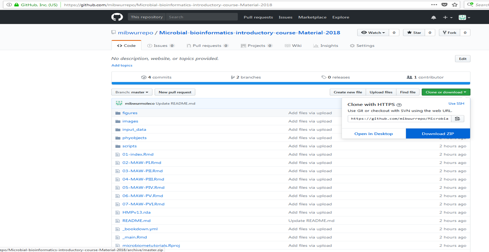

2 Introduction

Three day spring school on basics of high throughput 16S rRNA gene sequencing data analysis. This spring school is organised in collaboration with VLAG graduate school, Laboratory of Microbiology, Laboratory of Systems and Synthetic Biology, Wageningen University & Research, the Netherlands and Department of Mathematics and Statistics University of Turku, Finland. This year it will be held at Wageningen University & Research. We will cover topics related to basics of sequencing and microbial community analysis. We will use NG-Tax and R based tools like Phyloseq, microbiome and ggplot2 for downstream data analysis and visualization.
2.1 Preparing for the course
We recommend using your own laptop. If this is not possible, kindly contact the organizers.
Install the following software before the course:
- R 3.5.1 Download link.
- Rstudio Download link.
*Make sure you have admin rights on the machine you install these softwares to avoid access issues.
Download the master branch of the the github repository for the course.
Unzip the Microbial-bioinformatics-introductory-course-Material-2018-master.zip folder. Unzip the humanmicrobiome.zip subfolder within the input_data folder so that the humanmicrobiome.biom file is in input_data folder.
open the microbiometutorials.Rproj
The script to set-up the RStudio environment with required package installations can be found in the folder named scripts/setup_microbiome_analysis.R. In the image below, there is description of how to run this code.
2.2 Useful functions/resources
2.3 Focus
The primary aim is introduce microbial community data analysis. There will be talks and discussion on theory and methodology for analysis of microbial community data. We will cover topics ranging from design of studies, sequencing technologies, importance of controls and standardized DNA processing. Supervised hands-on training covering analyses from raw reads using NG-Tax, downstream analysis in R for exploration and analysis of microbiome sequencing data will be priority. There will be a strong focus on using R, R Studio for moving towards reproducible and open science.
2.4 Target audience
Anyone who plans to or is currently doing high throughput microbial community analysis.